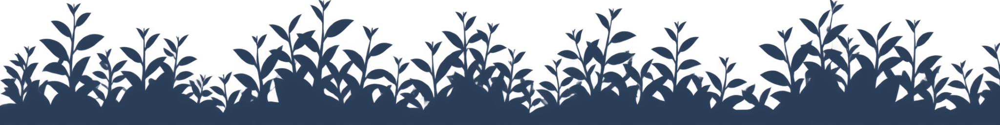

Selamat Datang ke
Pejabat Daerah Ranau
Kami menyampaikan perkhidmatan pentadbiran daerah yang telus dan mesra rakyat kepada penduduk Ranau, di kaki Gunung Kinabalu.
Waktu pejabatIsnin–Jumaat · 8:00 pagi – 5:00 petang
Kalendar cuti umumProgram, acara & cuti umum Sabah
JAMALBerita terkini · 3 minggu yang lepas


Tatal untuk melihat
Perutusan Pegawai Daerah
Selamat datang ke Laman Web Pejabat Daerah Ranau
Salam sejahtera, Salam Malaysia Madani dan Salam Sabah Maju Jaya. Laman web ini menyokong Pelan Pendigitalan Kerajaan Negeri Sabah sebagai sumber maklumat terkini tentang pentadbiran, pembangunan dan program di Daerah Ranau.
Tinus Bin ManggamPegawai Daerah Ranau
Baca perutusan penuhProfil Daerah
Maklumat mengenai Daerah Ranau
Galeri & Pautan
Gambar, video dan pautan berguna
Galeri & PautanGambar
Lihat koleksi foto program, aktiviti rasmi dan suasana Daerah Ranau.
Galeri & PautanVideo
Tonton rakaman aktiviti, liputan program dan video rasmi Pejabat Daerah.
Galeri & PautanIntranet
Akses sistem dan perkhidmatan dalam talian untuk warga pejabat.
Galeri & PautanPautan Agensi
Layari portal rasmi jabatan dan agensi kerajaan berkaitan.
Pautan Berkaitan
Pautan luar dibuka dalam tab baharu.